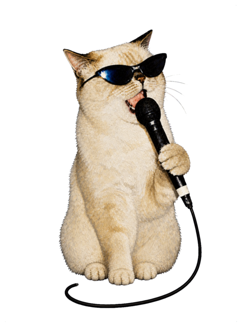

SAIN
Эксперты по сну как плейлист
Кейс 4, команда «Кисы». Задаёшь вопрос о сне, отвечают три эксперта, каждый со ссылкой на научную статью
Виталиякапитан, фронтенд
Степанбизнес-аналитик, фронтенд
Максимтестирование, поиск ошибок
АлимAI-инженер: сервер и модель

